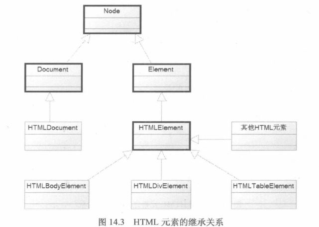
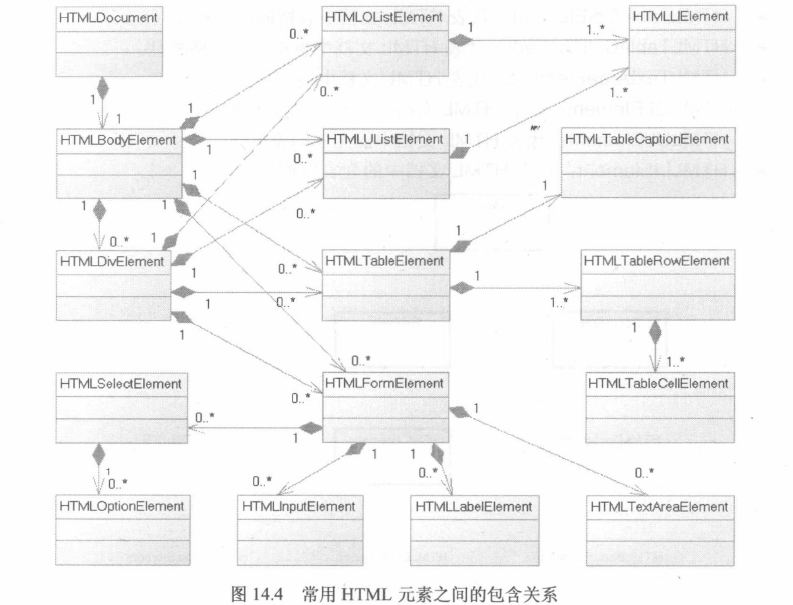

DOM为常用的HTML元素提供了一套完整的继承体系。从页面的Document对象到常用的HTML元素，DOM模型都提供了对应的类， 每个类都提供了相应的方法来操作DOM元素本身、属性及其子元素。DOM模型允许以树的方式操作HTML文档中的每个元素。
虽然JavaScript不是一门纯粹的面向对象语言，但DOM还是为HTML元素提供了一种简单的继承关系。DOM模型里HTML元素的继承 关系如下：
粗线框处的4个元素：Node、Document、Element、HTMLElement都是普通HTML元素的超类，不直接对应于HTML页面控件，但他们 所包含的方法也可被其他页面元素调用。除此之外还有以下常见的HTML元素。
有些HTML元素之间可以互相嵌套，比如div和div之间；有些则不可以，例如td只能作为tr的子元素，option只能作为select 的子元素。常见包含关系如下：
从上图中可以看出，HTMLDocument对象作为整个HTML文档的最大对象，里面可以包含一个HTMLBodyElement对象。HTML文档 中还有两个对象体系：表单对象和表格对象。